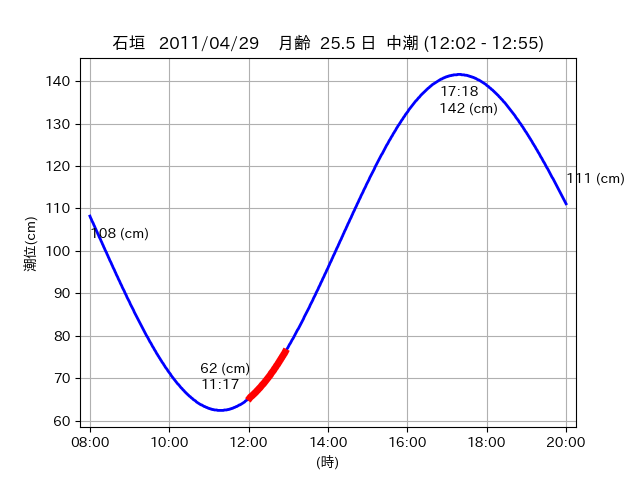
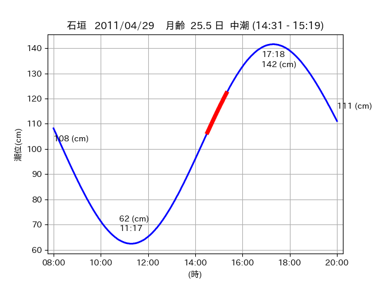

<!DOCTYPE html>
<html>
<head>
    
    <meta http-equiv="content-type" content="text/html; charset=UTF-8" />
    
        <script>
            L_NO_TOUCH = false;
            L_DISABLE_3D = false;
        </script>
    
    <style>html, body {width: 100%;height: 100%;margin: 0;padding: 0;}</style>
    <style>#map {position:absolute;top:0;bottom:0;right:0;left:0;}</style>
    <script src="https://cdn.jsdelivr.net/npm/leaflet@1.9.3/dist/leaflet.js"></script>
    <script src="https://code.jquery.com/jquery-3.7.1.min.js"></script>
    <script src="https://cdn.jsdelivr.net/npm/bootstrap@5.2.2/dist/js/bootstrap.bundle.min.js"></script>
    <script src="https://cdnjs.cloudflare.com/ajax/libs/Leaflet.awesome-markers/2.0.2/leaflet.awesome-markers.js"></script>
    <link rel="stylesheet" href="https://cdn.jsdelivr.net/npm/leaflet@1.9.3/dist/leaflet.css"/>
    <link rel="stylesheet" href="https://cdn.jsdelivr.net/npm/bootstrap@5.2.2/dist/css/bootstrap.min.css"/>
    <link rel="stylesheet" href="https://netdna.bootstrapcdn.com/bootstrap/3.0.0/css/bootstrap-glyphicons.css"/>
    <link rel="stylesheet" href="https://cdn.jsdelivr.net/npm/@fortawesome/fontawesome-free@6.2.0/css/all.min.css"/>
    <link rel="stylesheet" href="https://cdnjs.cloudflare.com/ajax/libs/Leaflet.awesome-markers/2.0.2/leaflet.awesome-markers.css"/>
    <link rel="stylesheet" href="https://cdn.jsdelivr.net/gh/python-visualization/folium/folium/templates/leaflet.awesome.rotate.min.css"/>
    
            <meta name="viewport" content="width=device-width,
                initial-scale=1.0, maximum-scale=1.0, user-scalable=no" />
            <style>
                #map_0e0a7e765caa7aa3813bbb7726da03c9 {
                    position: relative;
                    width: 2048.0px;
                    height: 1600.0px;
                    left: 0.0%;
                    top: 0.0%;
                }
                .leaflet-container { font-size: 1rem; }
            </style>
        
</head>
<body>
    
    
            <div class="folium-map" id="map_0e0a7e765caa7aa3813bbb7726da03c9" ></div>
        
</body>
<script>
    
    
            var map_0e0a7e765caa7aa3813bbb7726da03c9 = L.map(
                "map_0e0a7e765caa7aa3813bbb7726da03c9",
                {
                    center: [24.371, 123.95],
                    crs: L.CRS.EPSG3857,
                    ...{
  "zoom": 12,
  "zoomControl": true,
  "preferCanvas": false,
}

                }
            );

            

        
    
            var tile_layer_25e5c8c0c24b6e10c53276e4e7fa1218 = L.tileLayer(
                "https://cyberjapandata.gsi.go.jp/xyz/seamlessphoto/{z}/{x}/{y}.jpg",
                {
  "minZoom": 0,
  "maxZoom": 18,
  "maxNativeZoom": 18,
  "noWrap": false,
  "attribution": "\u5730\u7406\u9662\u5730\u56f3",
  "subdomains": "abc",
  "detectRetina": false,
  "tms": false,
  "opacity": 1,
}

            );
        
    
            tile_layer_25e5c8c0c24b6e10c53276e4e7fa1218.addTo(map_0e0a7e765caa7aa3813bbb7726da03c9);
        
    
            var marker_a0552046bfef222e1a136051e5f39777 = L.marker(
                [24.3535, 123.9537],
                {
}
            ).addTo(map_0e0a7e765caa7aa3813bbb7726da03c9);
        
    
            var icon_4ab3067420e0087e3e0b399e73cd4b74 = L.AwesomeMarkers.icon(
                {
  "markerColor": "orange",
  "iconColor": "white",
  "icon": "info-sign",
  "prefix": "glyphicon",
  "extraClasses": "fa-rotate-0",
}
            );
        
    
        var popup_09befe9c30dbde7f0961871c4d153319 = L.popup({
  "maxWidth": "100%",
});

        
            
                var html_d17eed019162d857ff02ea49f98a433e = $(`<div id="html_d17eed019162d857ff02ea49f98a433e" style="width: 100.0%; height: 100.0%;"><table><tr><td></td></tr><tr><td><center>20110429 No.1 </center></table></td></tr></table</div>`)[0];
                popup_09befe9c30dbde7f0961871c4d153319.setContent(html_d17eed019162d857ff02ea49f98a433e);
            
        

        marker_a0552046bfef222e1a136051e5f39777.bindPopup(popup_09befe9c30dbde7f0961871c4d153319)
        ;

        
    
    
                marker_a0552046bfef222e1a136051e5f39777.setIcon(icon_4ab3067420e0087e3e0b399e73cd4b74);
            
    
            var poly_line_ac77eb92f8ee0332a6803ad62def834f = L.polyline(
                [[24.3535, 123.9537], [24.3457, 123.95]],
                {"bubblingMouseEvents": true, "color": "#00FFFF", "dashArray": null, "dashOffset": null, "fill": false, "fillColor": "#00FFFF", "fillOpacity": 0.2, "fillRule": "evenodd", "lineCap": "round", "lineJoin": "round", "noClip": false, "opacity": 1.0, "smoothFactor": 1.0, "stroke": true, "weight": 3}
            ).addTo(map_0e0a7e765caa7aa3813bbb7726da03c9);
        
    
            var marker_50a22994b1d887daf4d5ecc9332311d2 = L.marker(
                [24.3691, 123.9649],
                {
}
            ).addTo(map_0e0a7e765caa7aa3813bbb7726da03c9);
        
    
            var icon_9839ebf860d6ddf74cd93383e65db117 = L.AwesomeMarkers.icon(
                {
  "markerColor": "orange",
  "iconColor": "white",
  "icon": "info-sign",
  "prefix": "glyphicon",
  "extraClasses": "fa-rotate-0",
}
            );
        
    
        var popup_a2f8949848b06256414e4fe3901a009e = L.popup({
  "maxWidth": "100%",
});

        
            
                var html_0b35cc9526a3576975872bce6517a060 = $(`<div id="html_0b35cc9526a3576975872bce6517a060" style="width: 100.0%; height: 100.0%;"><table><tr><td></td></tr><tr><td><center>20110429 No.2 </center></table></td></tr></table</div>`)[0];
                popup_a2f8949848b06256414e4fe3901a009e.setContent(html_0b35cc9526a3576975872bce6517a060);
            
        

        marker_50a22994b1d887daf4d5ecc9332311d2.bindPopup(popup_a2f8949848b06256414e4fe3901a009e)
        ;

        
    
    
                marker_50a22994b1d887daf4d5ecc9332311d2.setIcon(icon_9839ebf860d6ddf74cd93383e65db117);
            
    
            var poly_line_5db01ac1d62934aca709f2df62164fa3 = L.polyline(
                [[24.3691, 123.9649], [24.3686, 123.9588]],
                {"bubblingMouseEvents": true, "color": "#00FFFF", "dashArray": null, "dashOffset": null, "fill": false, "fillColor": "#00FFFF", "fillOpacity": 0.2, "fillRule": "evenodd", "lineCap": "round", "lineJoin": "round", "noClip": false, "opacity": 1.0, "smoothFactor": 1.0, "stroke": true, "weight": 3}
            ).addTo(map_0e0a7e765caa7aa3813bbb7726da03c9);
        
    
            var marker_0144c8a24937e457f0956602cdbc3c43 = L.marker(
                [24.3684, 123.9517],
                {
}
            ).addTo(map_0e0a7e765caa7aa3813bbb7726da03c9);
        
    
            var icon_ec6fe2fa1094c06ae8f0bb4526637c74 = L.AwesomeMarkers.icon(
                {
  "markerColor": "orange",
  "iconColor": "white",
  "icon": "info-sign",
  "prefix": "glyphicon",
  "extraClasses": "fa-rotate-0",
}
            );
        
    
        var popup_0d22914ea58c435e82db9a20e4889d49 = L.popup({
  "maxWidth": "100%",
});

        
            
                var html_51995e5f9033bc9a61b9a0bb76db4a90 = $(`<div id="html_51995e5f9033bc9a61b9a0bb76db4a90" style="width: 100.0%; height: 100.0%;"><table><tr><td></td></tr><tr><td><center>20110429 No.3 </center></table></td></tr></table</div>`)[0];
                popup_0d22914ea58c435e82db9a20e4889d49.setContent(html_51995e5f9033bc9a61b9a0bb76db4a90);
            
        

        marker_0144c8a24937e457f0956602cdbc3c43.bindPopup(popup_0d22914ea58c435e82db9a20e4889d49)
        ;

        
    
    
                marker_0144c8a24937e457f0956602cdbc3c43.setIcon(icon_ec6fe2fa1094c06ae8f0bb4526637c74);
            
    
            var poly_line_4c2b34970f37d3cbb748c2f42ae085cb = L.polyline(
                [[24.3684, 123.9517], [24.3729, 123.9492]],
                {"bubblingMouseEvents": true, "color": "#FF00FF", "dashArray": null, "dashOffset": null, "fill": false, "fillColor": "#FF00FF", "fillOpacity": 0.2, "fillRule": "evenodd", "lineCap": "round", "lineJoin": "round", "noClip": false, "opacity": 1.0, "smoothFactor": 1.0, "stroke": true, "weight": 3}
            ).addTo(map_0e0a7e765caa7aa3813bbb7726da03c9);
        
</script>
</html>